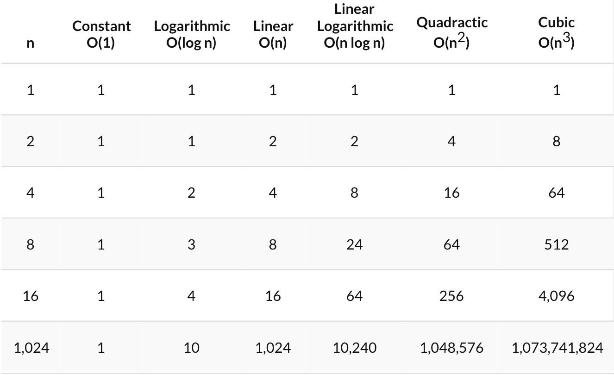

SORTING AND SEARCHING
SORTING
BUBBLE SORT
The sorting algorithm bubble sort is one of the simplest sorting algorithms. It is a procedure that puts values in a list or array in ascending or descending order. It is a good introductory concept to sorting, which will make more complex sorting concepts easier to understand. Bubble sort works by repeatedly swapping each pair of elements in an array or list if it is placed in the wrong order.
public class BubbleSort {
public void sortArray (int [] sort){
int temp = 0;
boolean swapped;
for (int i = 1 ; i < sort.length ; i++)
{
swapped = false;
for (int x = 0 ; x < sort.length - 1 ; x++)
{
if (sort [x] > sort [i]){
temp = sort [i];
sort [i] = sort [x];
sort [x] = temp;
swapped = true;
}
}
if (swapped == false)
break;
}
}
public static void main (String[] args){
int [] arr = {3, 7, 9, 4, 10, 2, 1, 5, 6, 8};
BubbleSort b = new BubbleSort ();
b.sortArray (arr);
}
}
The code above is a short example on bubble sort. The declared array has numbers 1 through 10 placed at
random. To optimize the sorting a boolean variable is used to track when all the elements are sorted.
Bubble sort works by comparing the 1st and 2nd value, 2nd and 3rd, 3rd and 4th, and so on. It compares
the element at arrayName[i] to the element beside it. If you want to sort your array from least to greatest
value, then the if statement must check if the element at arrayName[i] is larger than the element at
arrayName[i + 1]. If you want to sort your array from greatest to least, your if statement must check if
arrayName[i] is less than arrayName[i + 1]. If the two elements fit the condition of the if statement, the
order of the elements are swapped. The program will know it has finished sorting once the final pass does
not need any modifications made to the array and therefore the boolean variable is set to false.
The worst case and average time complexity for bubble sort, in big O notations, is O(n^2). This means that
it takes n times n comparisons to finish sorting, when the number of elements in the array is n. The best
case time complexity is O(n), which means it takes n number of comparisons to finish sorting. Big O notation
is a notation for time complexity that describes how many comparisons an algorithm needs to finish sorting
relative to the number of elements it is comparing. Bubble sort isn't very practical, nor efficient compared
to the time complexity of other sorting algorithms. Bubble sort has an auxiliary space of one, because only
one temporary variable is used throughout the entire sort. Therefore bubble sorts space complexity is
efficient.
SEARCHING
BINARY SEARCH
Binary search is used to search a sorted array by using a divide and conquer method. When searching a sorted
array, this algorithm is a lot more efficient. A divide and conquer method is continuously dividing the
array in half until a value is found. This search can only be used when the array being searched has already
been sorted. The value of the middle element is compared to the key value. If the middle element is smaller
than the key, the key must be in the left half of the array, therefore the sub array will be from the middle
element to the largest element. If the middle element is bigger than the key, the key is determined to be in
the right half of the array, therefore the sub array will be from the first element to the middle element.
This process is repeated until the key is found. -1 is returned if the key doesn't exist or if the array
hasn't been sorted.
public class BinarySearch {
public void sortArray (int[]sort, int lowest, int highest, int key) {
if (lowest > highest)
return -1;
else {
middle = (lowest + highest) / 2;
if (key == sort[middle])
return middle;
else if (key > sort[middle])
return (sortArray (sort, sort[middle+1], sort[highest], key));
else (key < sort[middle])
return (sortArray (sort, sort[lowest], sort[middle-1], key));
}
return -1;
}
public static void main (String[] args)
{
int [] arr = {1, 3, 4, 6, 9, 10, 12, 13, 20, 21};
int h = arr.length;
BinarySearch b = new BinarySearch ();
b.sortArray (arr, 0, h, 13);
}
}
The best case is when the middle number (lowest + highest) / 2 is equal to the key. Therefore the key
value is found on the first pass, making binary search's best time complexity O(1). The worst case is when
the key is not found in the array or list, or if the key is the first or last element. The program keeps
searching until there's only one element, which means that n/2 until there's one element left. Its worst
time complexity is O(log n). Binary search's space complexity would be O(1), because we only need to store
the lowest index, the highest index, and the middle value.
SEQUENTIAL SEARCH
Sequential search, also known as linear search, compares the key value to each element in the array or list,
starting at the first element. The key is compared to each element until the index of key is found, or until
it has compared it to every element in the array or list. When the array being searched is sorted, you can
improve the efficiency by stopping the search when the value of key is less than the element being compared.
This will improve its efficiency because in a sorted array, once the key is less than an element, it won't
equal any element after that.
public class SequentialSearch {
public void sortArray (int[]sort, int n, int key) {
for (int i = 0 ; i < n ; i ++) {
if (sort[i] == key)
return i;
}
return -1;
}
public static void main (String[] args)
{
int [] arr = {3, 7, 9, 4, 10, 2, 1, 5, 6, 8};
int num = arr.length;
SequentialSearch b = new SequentialSearch ();
b.sortArray (arr, num, 1);
}
}
The best case occurs when the key is the first element, which gives it a time complexity of O(1). Its
worst case occurs when the key is the last element of the list or array, which gives it a time complexity
of O(n). This is due to the face that we have to compare each element within the array to the key.
Sequential searching space complexity is O(1) because no extra variables or space is needed to store any
values.
TIME COMPLEXITY
Time complexity was a term that was mentioned quite frequently above. Time complexity is how much time is need for an algorithm to execute. Below is a table that shows the different time complexities.
